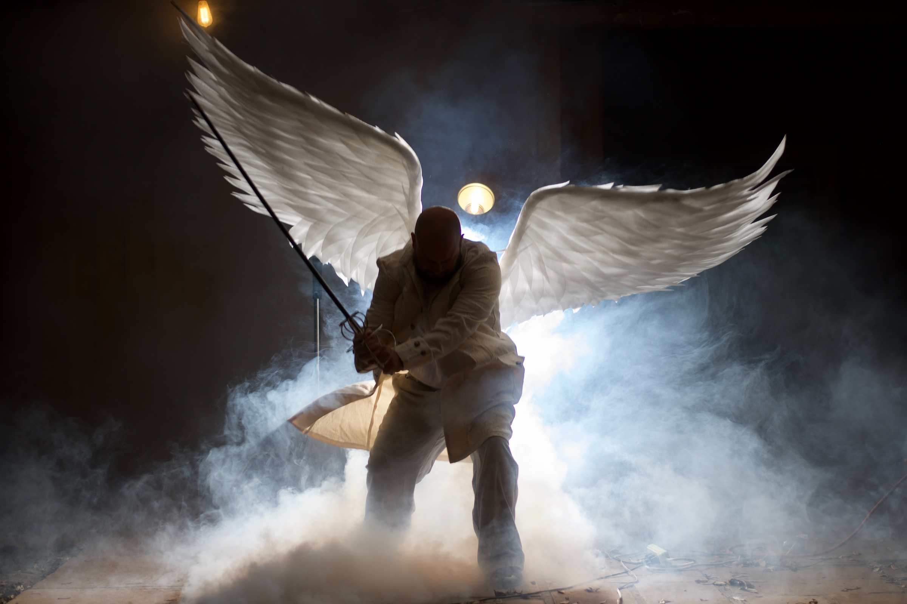

Während des Montego-Air-Flugs 828 von Jamaika nach New York City treten heftige Turbulenzen auf. Bei der anschließenden Landung erfahren die Fluggäste und Besatzungsmitglieder von der National Security Agency, dass seit dem Abflug mehr als fünfeinhalb Jahre vergangen sind. Aufgrund des spurlosen, langanhaltenden Verschwindens des Flugzeugs mit allen Insassen wurden sie alle für tot erklärt. Die Zurückgekehrten erkennen, dass ihr Leben nicht mehr so wie früher sein wird. Angehörige sowie Bekannte reagieren sehr unterschiedlich auf die Rückkehr. Die Zurückgekehrten hören zudem plötzlich Stimmen und erleben Visionen, welche auf Ereignisse aus der Vergangenheit, Gegenwart oder Zukunft hinweisen, was die ganze Situation weiter verkompliziert. Während die Passagiere mit den Herausforderungen der neuen Realität kämpfen, werden sie mit mysteriösen Stimmen aus dem Jenseits konfrontiert. Diese Stimmen, die sogenannten "Rufen", drängen sie dazu, Gutes zu tun und Menschen in Not zu helfen. Einige Passagiere nutzen ihre neugewonnenen Kräfte für ihre eigenen Ziele und missbrauchen diese. Zudem gibt es Menschen, die es auf die Passagiere abgesehen haben und alle töten möchten. In den vier Staffeln von "Manifest" gibt es zahlreiche emotionale Tode, die die Protagonisten und Zuschauer verkraften müssen.
Die achtzehnjährige Clary Fray geht an ihrem Geburtstag mit ihrem besten Freund Simon Lewis und seiner Bandkollegin Maureen in einen Club und trifft dort auf drei Teenager mit seltsamen Tattoos und fremdartigen Waffen. Da sie die einzige ist, die die drei sehen kann, läuft sie ihnen nach, wodurch sie Zeuge eines Massakers wird, das wieder nur sie zu sehen scheint. Daraufhin wird ihre Mutter entführt, die einen magischen Kelch besitzt, den wohl wichtigsten Gegenstand der sogenannten Unterwelt, in die Clary jetzt hineingeraten ist und in der Werwölfe, Vampire und Elfen keine Schauermärchen mehr sind. Die drei Shadowhunter Jace Wayland, Alec Lightwood und Isabelle Lightwood, deren Eltern die Leiter des New Yorker Instituts sind, zeigen Clary Fray die düstere Parallelwelt, an die sie sich nicht erinnern kann, da ihre Erinnerungen zum Schutz des Mädchens und des Engelkelches von dem Hexenmeister Magnus Bane gelöscht worden sind. Jace Wayland bringt ihr bei, in seiner Welt zu überleben, wobei die beiden Gefühle füreinander entwickeln. Dadurch entsteht ein Konkurrenzkampf zwischen Simon und Jace um die schöne Shadowhunterin, wobei der gutmütige Simon eindeutig den Kürzeren zieht. Alec hegt starke Abneigungen gegen Clary Fray, da er über seine gegenseitig Kraft verleihende Parabatai-Bindung hinaus starke Gefühle für Jace Wayland hegt. Jace Wayland steht immer hinter Clary Fray, die auf jede erdenkliche Weise versucht ihre Shadowhuntermutter Jocelyn Fray vor Valentine, ihrem Vater, zu beschützen und sie zu befreien. Der Kampf um den Kelch hat begonnen, wodurch Clary in größter Gefahr ist, denn sie ist der Schlüssel zur Endlosen Macht des Kelches, doch ihre Erinnerungen bleiben verschwunden. Im Laufe der Staffel wird Alecs und Isabelles Eltern die Leitung des Instituts durch Lydia Branwell entzogen, da es häufig zu Gesetzesverstößen kommt, wenn die jungen Shadowhunter sich auf eigene Faust auf die Suche nach dem Kelch machen. Weiterhin macht der begabte Hexenmeister Magnus Bane Alec schöne Augen und Simon wird durch Clarys Entscheidung in einen Vampir verwandelt und muss somit sein bisheriges Leben aufgeben. Zum Ende spitzt sich die Lage zu, als Valentine Clary und Jace eröffnet, dass sie Geschwister sind, wodurch ihre Beziehung in eine unangenehme Lage kommt.
Nachdem die Schule San Esteban im Armenviertel des Dorfes zusammengebrochen ist, sponsert das Bauunternehmen den drei Schülern Samuel, Nadia und Christian ein Stipendium an der Eliteschule Las Encinas. Alle drei haben zunächst Schwierigkeiten, sich an der neuen Schule einzufinden, da sie von ihren Mitschülern verachtet werden. Vor allem Guzmán ist den Neuankömmlingen abgeneigt, während seine Schwester Marina sie willkommen heißt und sie auf ihre Geburtstagsfeier einlädt. Samuel fühlt sich gleich zu Marina hingezogen. Jedoch hat er auch mit seiner Vergangenheit zu kämpfen, da sein Bruder Nano im Gefängnis sitzt. Als dieser überraschend wieder auftaucht und Geldprobleme hat, versucht Samuel ihm zu helfen. Bei einer Party kommen sich auch Nano und Marina näher und haben Sex miteinander. Marina bandelt anschließend auch mit Samuel an, bis sie erfährt, dass sie von Nano schwanger ist. Daraufhin wollen sie zusammen abhauen. Samuel, der durch Zufall von der Affäre zwischen seinem Bruder und Marina erfährt, ist am Boden zerstört und will nichts mehr von ihm wissen. Außerdem erfährt er, dass Marina vor einigen Jahren positiv auf HIV getestet wurde, nachdem sie mit einem Jungen geschlafen hatte. Nadia, eine Hijab-tragende Muslimin, macht sich Lu, die Freundin von Guzmán, gleich zur Feindin, da beide die Trophäe als beste Schülerin gewinnen wollen, um ein Stipendium an einer Eliteuniversität in Florida zu erhalten. Außerdem beobachtet Nadia Lu und Guzmán beim Sex in der Damenumkleide, was ein Regelverstoß ist. Um Nadia loszuwerden, heckt Lu zusammen mit Guzmán einen Plan aus. Dieser sieht vor, dass Guzmán Nadia verführt und entjungfert, um sie vor allen bloßzustellen. Guzmán jedoch lernt Nadia mit der Zeit besser kennen und kann den Plan nicht vollenden, da er sich in Nadia verliebt hat. Christian hält nicht viel von der Bildung am Las Encinas, sondern will nur reiche Freunde bekommen. Er bandelt mit Carla an, die allerdings mit Guzmáns bestem Freund Polo zusammen ist. Die drei geraten schnell in eine Dreiecksbeziehung. Mit der Zeit fühlt sich Polo zu Christian hingezogen. Durch eine Intrige schläft Christian mit Polo. Als Carla davon erfährt, trennt sie sich von Polo. Christian findet in Ander, dem Sohn der Direktorin, den einzigen Freund. Ander, ein angehender Tennisstar, lernt über Christian Omar kennen, der ihn mit Drogen versorgt. Die beiden kommen sich näher und müssen sich mit ihrer Homosexualität auseinandersetzen. Die beiden werden ein Paar, müssen dies jedoch vor ihren Eltern geheim halten. Außerdem gesteht Ander seinem Vater, dass er kein Tennisstar werden will. Der Höhepunkt der Dramen und Intrigen findet auf der Jahresabschlussparty der Eliteschule statt, als Marina tot aufgefunden wird. Nano wird aufgrund einer Aussage von Samuel, der Nano vom Tatort wegrennen gesehen hat, von der Polizei verhaftet. Es stellt sich jedoch heraus, dass Nano unschuldig ist, da Polo Marina erschlagen hat. Polo tötete Marina, da diese eine Armbanduhr, die Nano gestohlen hat, von Carlas Vater hatte. Auf der Armbanduhr waren brisante Informationen von Marinas und Carlas Vater enthalten. Polo wollte unbedingt die Armbanduhr Carla zurückgeben, um ihr seine Liebe zu gestehen. Carla und Christian kommen Polo durch Zufall auf die Spur und decken ihn daraufhin. Christian will gerne die Wahrheit sagen, wird jedoch von Carla unter Druck gesetzt, da er durch sie die Chance hat, in die bessere Gesellschaft zu kommen. Samuel glaubt mittlerweile an die Unschuld seines Bruders und bittet Christian um Hilfe bei der Suche nach dem wahren Mörder.